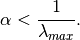

katz_centrality¶
-
katz_centrality(G, alpha=0.1, beta=1.0, max_iter=1000, tol=1e-06, nstart=None, normalized=True, weight='weight')[source]¶ Compute the Katz centrality for the nodes of the graph G.
Katz centrality is related to eigenvalue centrality and PageRank. The Katz centrality for node
 is
is
where
 is the adjacency matrix of the graph G with eigenvalues
is the adjacency matrix of the graph G with eigenvalues  .
.The parameter
 controls the initial centrality and
controls the initial centrality and
Katz centrality computes the relative influence of a node within a network by measuring the number of the immediate neighbors (first degree nodes) and also all other nodes in the network that connect to the node under consideration through these immediate neighbors.
Extra weight can be provided to immediate neighbors through the parameter
. Connections made with distant neighbors
are, however, penalized by an attenuation factor  which
should be strictly less than the inverse largest eigenvalue of the
adjacency matrix in order for the Katz centrality to be computed
correctly. More information is provided in [1] .
which
should be strictly less than the inverse largest eigenvalue of the
adjacency matrix in order for the Katz centrality to be computed
correctly. More information is provided in [1] .Parameters: - G (graph) – A NetworkX graph
- alpha (float) – Attenuation factor
- beta (scalar or dictionary, optional (default=1.0)) – Weight attributed to the immediate neighborhood. If not a scalar the dictionary must have an value for every node.
- max_iter (integer, optional (default=1000)) – Maximum number of iterations in power method.
- tol (float, optional (default=1.0e-6)) – Error tolerance used to check convergence in power method iteration.
- nstart (dictionary, optional) – Starting value of Katz iteration for each node.
- normalized (bool, optional (default=True)) – If True normalize the resulting values.
- weight (None or string, optional) – If None, all edge weights are considered equal. Otherwise holds the name of the edge attribute used as weight.
Returns: nodes – Dictionary of nodes with Katz centrality as the value.
Return type: dictionary
Examples
>>> import math >>> G = nx.path_graph(4) >>> phi = (1+math.sqrt(5))/2.0 # largest eigenvalue of adj matrix >>> centrality = nx.katz_centrality(G,1/phi-0.01) >>> for n,c in sorted(centrality.items()): ... print("%d %0.2f"%(n,c)) 0 0.37 1 0.60 2 0.60 3 0.37
Notes
This algorithm it uses the power method to find the eigenvector corresponding to the largest eigenvalue of the adjacency matrix of G. The constant alpha should be strictly less than the inverse of largest eigenvalue of the adjacency matrix for the algorithm to converge. The iteration will stop after max_iter iterations or an error tolerance of number_of_nodes(G)*tol has been reached.
When
 and
and  Katz centrality is the same as
eigenvector centrality.
Katz centrality is the same as
eigenvector centrality.For directed graphs this finds “left” eigenvectors which corresponds to the in-edges in the graph. For out-edges Katz centrality first reverse the graph with G.reverse().
References
[1] M. Newman, Networks: An Introduction. Oxford University Press, USA, 2010, p. 720. See also
katz_centrality_numpy(),eigenvector_centrality(),eigenvector_centrality_numpy(),pagerank(),hits()